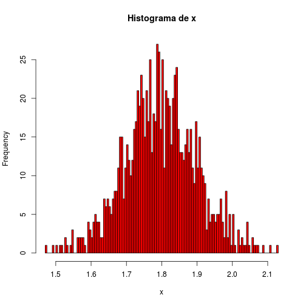

-
Aula 1 - Noções básicas
NA
SourceR como calculadora
A linguagem do R é um tanto quanto intuitiva, muita coisa sai do jeito certo no chute! Para ver um exemplo disso, é interessante começar fazendo do R uma grande calculadora. Tente jogar no console
2*2 - (4 + 4)/2. Pronto. Com essa simples expressão você já é capaz de imaginar (e certeiramente) como pedir ao R para fazer qualquer tipo de operação aritmética. Lição aprendida!Além do mais, as operações e suas precedências são mantidas como na matemática, ou seja, divisão e multiplicação são calculadas antes da adição e subtração. E os parênteses nunca são demais!
Falando em matemática, o \(\pi\) já vem definido!
pi## [1] 3.142sin(pi/2) + 2*3## [1] 7(sin(pi/2) + 2)*3## [1] 9Veja que apareceu a função
sin(), o famoso seno. Tente outras funções trigonométricas para ver se acerta de prima!Mas a ideia é essa. Ser intuitivo. A dica aqui é tentar! No R, um erro não é nenhuma dor de cabeça, é rápido consertar e testar (debugar, para os mais íntimos).
Valores especiais
Certas operações matemáticas podem suscitar em valores não numéricos. Exemplo disso são log de números negativos e divisões por zero. Para tais operações, o R reservou valores especiais para serem retornadas quando operações não resultarem em um número propriamente dito. A tabela abaixo lista esses objetos:
Operadores aritméticos
Os bons e conhecidos operadores aritméticos. Com números reais eles funcionam como na matemática, mas ao saírmos da reta, eles podem fazer muito mais!
operador descricao
x + y Adição de x com y
x - y Subtração de y em x
x * y Multiplicação de x e y
x / y Divisão de x por y
xy ou x**y x elevado a y-ésima potência
x%%y Resto da divisão de x por y (módulo)
x%/%y Parte inteira da divisão de x
por y
1 + 1## [1] 210 - 8## [1] 22*10## [1] 2018/3## [1] 62^4## [1] 169%%2## [1] 19%/%2## [1] 4Operadores lógicos
Operadores lógicos retornarão sempre ou
TRUEouFALSE. Eles definem perguntas que aceitam apenas verdadeiro e falso como resposta, como sugere o quadro abaixo.operador descricao
x < y x menor que y?
x <= y x menor ou igual a y?
x > y x maior que y?
x >= y x maior ou igual a y?
x == y x igual a y?
x != y x diferente de y?
!x Negativa de xx | y x ou y são verdadeiros?
x & y x e y são verdadeiros?
xor(x, y) x ou y são verdadeiros (apenas
um deles)?
Exemplos:
1 < 1## [1] FALSE1 <= 1## [1] TRUE1 == 0.999## [1] FALSE1 == 0.99999999999999999## [1] TRUE13.5 != 13.5## [1] FALSE!TRUE## [1] FALSETRUE | FALSE## [1] TRUEFALSE | FALSE## [1] FALSETRUE & FALSE## [1] FALSETRUE & TRUE## [1] TRUExor(TRUE, TRUE)## [1] FALSExor(TRUE, FALSE)## [1] TRUETRUE == 1## [1] TRUETRUE == 2## [1] FALSEFALSE == 0## [1] TRUENúmeros complexos
O R manipula números complexo de maneira fácil e intuitiva do mesmo jeito que trata os números reais. Além disso, disponibiliza funções úteis para eles, como módulo, conjugado e argumento.
x <- -8 + 0i # verifica se x é um número commplexo class(x)## [1] "complex"is.complex(x)## [1] TRUEA tabela abaixo resume algumas funções interessantes para números complexos.
Função Descrição
Re(z) Parte real de x
Im(z) Parte imaginária de x
Mod(z) Módulo de x
Arg(z) Argumento de x
Conj(z) Complexo conjugado de x
Demais funções matemáticas, como logaritmo, funções trigonométricas, exponencial e radiciação também estão implementadas para números complexos.
Controle de fluxo (flow controls)
Sumário
- if, else, else if: testa uma condição
- for, while: "laços" ou iterações
- break, next: ações dentro de laços
if, else e else if
Estrutura:
if(<condição1>) { # se a condição1 for verdadeira... # faz coisas interessantes. } else if (<condição2>) { # caso a condição1 seja falsa e a condição2 seja verdadeira... # faz coisas legais para este caso. } else { # faz coisas necessárias caso todas as condições anteriores falharem }As condições devem ser expressões lógicas, ou seja, testes que retornem
TRUEouFALSE. Assim, o código entre{}será executado se a condição forTRUEou será ignorada se a condição retornarFALSE.Exemplo:
x <- 4 # teste: x NÃO é um número? !is.numeric(x)## [1] FALSE# teste: x é menor que zero? x < 0## [1] FALSE# teste: x é maior que zero? x > 0## [1] TRUEif(!is.numeric(x)) { "x não é um número" } else if(x > 0) { "x é positivo" } else if(x < 0) { "x é negativo" } else { "x é nulo" }## [1] "x é positivo"O que acontece no exemplo acima, passo a passo:
A expressão
!is.numeric(x)testa sexNÃO é um número. Comoxvale 4, ele retornaFALSE. Assim, a expressão{"x não é um número"}não é executada e a próxima condição é testada;No primeiro
else if, o teste lógicox > 0retornaTRUE, fazendo com que a expressão{"x é positivo"}seja executada e todo o restante dos testes, ignorado.
OBS: a condições
x < 0nunca chegou a ser testada. Uma vez encontrada uma condição verdadeira, o programa executa o respectivo bloco de códigos entre{}e descarta as demais instruções.Considerações:
- O
elsee oelse iftêm que estar na mesma linha do}da expressão anterior, senão não rodará!
#Certo if(1 == 2) { "Um resultado muito interessante!" } else { # <----- Mesma linha que o "}" "1 é diferente de 2" } # ERRADO!!! Não rodará if(1 == 2) { "Um resultado muito interessante!" } else { # <----- Na linha abaixo do "}" "1 é diferente de 2" }Além de
TRUEeFALSE, o R aceita1e0, respectivamente. Na verdade, não precisa ser1exatamente, a regra é:- número diferente de zero é
TRUE; e - número igual a zero é
FALSE.
- número diferente de zero é
Objetos
character,NA,NaNelistnão são interpretáveis como lógicos. Será retornado um erro caso tente passá-los como condições.Caso seja passado um
array,vectoroumatrix, será utilizado apenas o primeiro elemento (é melhor evitar usar arrays como condições!). Será enviado um aviso de que isso ocorreu.elseeelse ifsão opcionais.
for
O
foré um tipo "laço" (loop, em inglês) que aplica um bloco deEstrutura:
for(iterador in <sequencia>) { # Fazer algo para cada item da <sequencia> # pode ter outros for's aqui dentro! }Exemplo:
O uso mais simples é quando iteramos em um vetor de inteiros, como se fossem contadores.
for(i in 1:5) { print(i) }## [1] 1 ## [1] 2 ## [1] 3 ## [1] 4 ## [1] 5Mas podemos iterar em um vetor qualquer.
frutas <- c("banana", "uva", "abacaxi") # Brincadeira da <fruta> + "guei" for(fruta in frutas) { print(paste(fruta, "guei", sep = "")) }## [1] "bananaguei" ## [1] "uvaguei" ## [1] "abacaxiguei"Para cada item do vetor
frutas, oforatribuiu ao objetofrutao valor do respectivo item e aplicou a funçãoprint(paste(fruta, "guei", sep = "")).Formas alternativas com o mesmo comportamento que o acima:
# repare nos []'s depois do vetor 'frutas' for(i in 1:length(frutas)) { print(paste(frutas[i], "guei", sep = "")) } # seq_along() é uma função especialmente útil para for's for(i in seq_along(frutas)) { print(paste(frutas[i], "guei", sep = "")) }OBS Apesar de parecer mais 'elegante' atribuir diretamente os valores ao iterador (como no caso do
fruta in frutas), muitas vezes você se pegará na necessidade de usar os índices dos valores. Casos típicos é quando se tem um outro vetor que faz relação com outro. O exemplo abaixo não seria possível caso utilizássemosfruta in frutasno lugar dei in seq_along(frutas).# Exemplo simples de quando é util utilizar índice em vez de valor. frutas1 <- c("banana", "uva", "abacaxi") frutas2 <- c("kiwi", "uva", "laranja") pessoas <- c("Amanda", "Bruno", "Caio") for(i in seq_along(frutas1)) { if(frutas1[i] == frutas2[i]) { frutas1[i] <- "manga" # Troca a fruta 1 print(paste(pessoas[i], "ganhou frutas repetidas. Uma delas foi trocada por manga.")) } }## [1] "Bruno ganhou frutas repetidas. Uma delas foi trocada por manga."ifelse(): for com if else
Como veremos mais para frente, vetores são quase sempre bem-vindos no R. Muitas funções trabalham com vetores de maneira muito conveniente e a função
ifelse()é um exemplo disso. Ela é a abordagem mais simples quando queremos que cada elemento de um vetor passe por algum teste lógico (como no exemplo acima) para retornar um valor dependendo se a condiçao forTRUEouFALSE(como nunca é demais, dê um?ifelsepara ver a documentação se for preciso). Abaixo está a replicação do exemplo acima, mas sem a mensagem de aviso.frutas1 <- c("banana", "uva", "abacaxi") frutas2 <- c("kiwi", "uva", "laranja") pessoas <- c("Amanda", "Bruno", "Caio") frutas1 <- ifelse(frutas1 == frutas2, "manga", frutas1)O código acima está dizendo que se os respectivos elementos de frutas1 e frutas2 calharem de serem iguais, então substitua por "manga". Se forem diferentes, então mantenha a fruta 1 original. Finalmente, atualize o vetor
frutas1.Na parte de vetorização será descrita com mais detalhe o que está acontecendo por trás dos panos.
Considerações:
O uso do for, ao contrário das outras linguagens de programação, se tornará cada vez menos frequente conforme você for se aprimorando no R. Ele é especialmente ineficiente no R e, além disso, existem outras funções que o substituem e ainda facilitam muito mais a vida.
while
O laço
whileé especialmente útil quando não sabemos quando iremos parar (a condição para o laço deixar de rodar pode envolver o acaso ou convergência, por exemplo). Cuidado com os loops infinitos! =)Estrutura:
A estrutura é muito similar ao
if. Tem a condição (ou teste lógico) e a expressão a ser executada enquanto a condição for verdadeira.while(<condições>) { # coisas para fazzer enquanto as <condições> forem TRUE }Exemplo:
Abaixo está uma simulação de lançamento de moedas do qual se tem interesse em saber quantos lançamentos foram necessários até o aparecimento de uma "cara".
p <- 0.2 # probabilidade de cair "cara" lances <- 0 # contador de lançamentos while(runif(1) > p) { lances <- lances + 1 } lances## [1] 3A função
runif(1)gera um número aleatório no intervalo unitário toda vez que a condição é avaliada. Se este número for maior quep, então a moeda e lançada novamente e o contador de lançamentos é incrementado em uma unidade e esse ciclo se repete até que, por acaso, o número sorteado seja menor quep. No fim, teremos nossa desejada variável aleatória simulada de lances até "cara".Repare que enquanto a condição retornava
TRUE, a expressão sera reexecutada. O laço só parou quando a condição retornouFALSE. Essa é a regra dowhile.Vetorização
Vetores no R são cadeias ordenadas de elementos (geralmente números ou palavras) e são os objetos de maior interesse porque são eles que guardam os dados a serem analisados. Por essa razão que quase tudo feito no R aceita de braços abertos um "vetor" (entre aspas por que "vetor" aqui pode ser vetor, matriz, tabela, lista e afins, tipos de objetos que serão explicados em detalhes na próxima aula).
Se você é novo no mundo da programação, não vai sentir muito a vantagem desse conceito. Aos que já estão acostumados a programar em outras lingaguens de programação se verão tentados a usar loops para tudo. Isso terá de mudar (e irá, naturalmente). Como frisado anteriormente, loops no R são sofrivelmente ineficientes.
Tecnicalidades
Tecnicamente, vetorização nada mais é do que a cultura de se criar e usar funções vetorizadas. Essas funções recebem vetor(es) [x1, ..., xn] e devolvem vetor(es) [f(x1), ..., f(xn)]. Mas por quê é importante, afinal?
Implementar funções vetorizadas seria uma tarefa simples, não fosse a lentidão dos loops. No R, funções vetorizadas realmente úteis são implementadas nas linguagens de baixo nível, que são muito mais rápidas. Por isso, a não ser que domine C, FORTRAN ou C++, você ficará dependente das funções vetorizadas disponíveis pelo R ou por terceiros.
Eficiência
Abaixo está um exemplo que mostra a diferença de tempo que leva para calcular a raiz quadrada de cada elemento de um vetor de números.
- Uma das funções está implementada inteiramente em R utilizando um for para calcular a raiz quadrada em cada elemento do vetor por meio da função
sqrt(); - Uma segunda maneira de efetuar a mesma operação tira proveito da implementação vetorizada em C da função
sqrt().
x <- 1:1000000 # sequência de inteiros de 1 a 1000000 # função que calcula a raiz quadrada de cada elemento de um vetor de números meu_sqrt <- function(numeros) { resp <- numeric(length(numeros)) for(i in seq_along(numeros)) { resp[i] <- sqrt(numeros[i]) } return(resp) } # Comparação de eficiência entre função vetorizada e função "vetorizada no R" system.time(x2a <- meu_sqrt(x))## user system elapsed ## 2.328 0.000 2.336system.time(x2b <- sqrt(x))## user system elapsed ## 0.008 0.004 0.013# Verifica que os dois vetores são iguais identical(x2a, x2b)## [1] TRUEUm ganho de 200 vezes na eficiência! E as vantagens não param por aí:
- Essas funções foram construídas e testadas por pessoas que ganham a vida fazendo isso;
- No R, uma função é "esperta" e funciona para diferentes tipos de objetos que passamos a ela, muitas vezes da forma que esperamos.
Reciclagem
Um conceito que caminha junto com a vetorização é a chamada Reciclagem. Um exemplo ajuda a esclarecer o que isso significa.
x <- c(1,5) y <- c(1,10,100,1000) x + y## [1] 2 15 101 1005Neste exemplo estamos somando dois vetores de tamanhos diferentes. Na matemática isso não faz sentido, mas no R faz! E qual convenção se usa para que essa operação seja bem definida? A resposta é Reciclagem. O operador
+é uma função vetorizada e que está programado para lidar com quase qualquer tipo de soma que o usuário queira desafiá-lo a fazer. Ao ser incumbido da árdua missão de somar dois vetores de tamanhos diferentes, o+"recicla" os valores do menor vetor, no caso o vetorx, reutilizando seus valores até preencher o vetor maior.Esta convenção aparece sempre que possível no R e vale tomar cuidado: há vezes em que o R não avisa que reciclou valores.
Funções
Funções são grandes trunfos das linguagens de programação. Função no R tem a mesma finalidade das funções das demais linguagens: evitar repetir códigos e construir abstrações. Funções deixam o código mais legível, elegante e menos repetitivo. Além disso, funções abstraem uma rotina para casos mais gerais por meio de parâmetros, fazendo-a útil para casos além daquela configuração específica que motivou sua implementação.
Estrutura
nome_da_funcao <- function(<parâmetros>) { # faz coisas com os parâmetros resultado } # uso da função nome_da_funcao(param1, param2, ...)Pontos relevantes:
Funções também são objetos! Aliás, tudo que você atribui com
<-vira um objeto no R. Assim, é natural pensar que funções podem receber outras funções como argumento e isso é bem comum.Assim que uma função for atribuída a um objeto, use esta função como se ela tivesse vinda com o R:
nome_da_funcao(...).
Parâmetros
Funções aceitam quaisquer e quantos parâmetros precisar e retorna um objeto, de qualquer tipo, inclusive nada (
NULL). No lugar do<parâmetros>você pode colocar nomes que servirão de objetos (número, texto, vetor, lista, etc.) dentro da sua função.Parâmetros opcionais
Parâmetros são objetos cujos valores devem ser atribuídos pelo usuário. Porém, existem parâmetros opcionais, que assumem um dado valor padrão caso o usuário opte por não especificar explicitamente.
# função que ecoa uma palavra ecoar <- function(palavra, n_ecos = 3) { paste(c(rep(palavra, n_ecos), "!"), collapse = " ") }Parâmetros relativos
Além de parâmetros opcionais, podem existir parâmetros cujo valor padrão usa o valor de outro parâmetro. Exemplo:
# Função que desenha um histograma histograma <- function(numeros, xlab = "x", titulo = paste("Histograma de", xlab)) { hist(numeros, xlab = xlab, main = titulo) } # Simula 1000 medidas de altura de pessoas de uma Normal com média 1,80 e desvio padrão de 0,1. altura <- rnorm(n = 1000, mean = 1.80, sd = 0.1) histograma(altura, "altura")histograma(altura, "altura", "Eu escolho o título que eu quiser")O parâmetro
xlabdefine o título do eixo x enquantotituloescreve o título principal do gráfico. Este último irá utilizar o nome passado para o eixo x para criar o seu valor padrão.Ordem ou nome
Podemos passar valores aos parâmetros explicitamente ou implicitamente. Passar valor explicitamente significa associar o valor desejado ao nome do parâmetro. Por exemplo, no código
rnorm(n = 1000, mean = 1.80, sd = 0.1)está claro qual valor será passado para cada parâmetro. Se quisermos omitir os nomes dos parâmetros, as funções terão a boa vontade de deduzir a qual parâmetro você deseja atribuir certo valor e isso é feito utilizando a ORDEM dos parâmetros definidos na criação da função. No comandohistograma(altura, "altura")nenhum parâmetro foi diretamente definido, mas pela ordem, o vetoralturafoi atribuído ao parâmetronumerose a string"altura"foi atribuída ao parâmetroxlabda funçãohistograma(). A versão "explícita" desse comando seriahistograma(numeros = altura, xlab = "altura").OBS: Misturar as formas, explícitas e implícitas, também funciona e versões explícitas aceitam que os parâmetros sejam passados fora de ordem. A expressão
histograma(xlab = "altura", altura)daria certo também!OBS 2: Se não for ambíguo, o R aceita que apenas parte do nome do parâmetro seja passado. No nosso exemplo,
histograma(altura, t = "Eu escolho o título que eu quiser", x = "altura")levaria ao mesmo resultado que todos os citados até aqui.Parâmetro "..."
Existe um parâmetro especial e frequentemente disponível em funções que é simbolizado por três pontinhos "...". Esse argumento indica que pode ser passado um número variável de parâmetros e que, geralmente, estes serão repassados para outras funções.
Uma utilidade é quando você deseja fazer possível mexer nos parâmetros de uma função, mas não quer copiar todos os seus parâmetros novamente. Retomemos o exemplo da função
histograma():histograma <- function(numeros, xlab = "x", titulo = paste("Histograma de", xlab), ...) { hist(numeros, xlab = xlab, main = titulo, ...) } histograma(altura, breaks = 100, col = 2)
Repare que nunca precisamos definir os parâmetros
breaksecolna funçãohistograma(). O ... fez o trabalho de enviar essas informações à funçãohist().Um segundo cenário que ... se faz útil é quando uma função aceita um número indefinido de argumentos. Um exemplo disso é a função
paste(), que concatena palavras. A ela, podemos passar quantas palavras quisermos. Não fosse o ..., teríamos que ter os parâmetros(palavra1, palavra2, palavra3, ...). Sem chances.args(paste)## function (..., sep = " ", collapse = NULL) ## NULLpaste("Eu", "sou", "o", "capitão", "planeta")## [1] "Eu sou o capitão planeta"Funções anônimas
As funções anônimas são frequentemente utilizadas e têm essa denominação pois não nos damos o trabalho de defini-las como um objeto permanente no nosso ambiente de trabalho. Veja o exemplo abaixo:
nums <- 1:10 eh_par <- sapply(nums, function(numero) {numero %% 2 == 0}) cbind(nums, eh_par)## nums eh_par ## [1,] 1 0 ## [2,] 2 1 ## [3,] 3 0 ## [4,] 4 1 ## [5,] 5 0 ## [6,] 6 1 ## [7,] 7 0 ## [8,] 8 1 ## [9,] 9 0 ## [10,] 10 1Não se preocupe em entender tudo o que o código acima está fazendo, você aprenderá adiante tudo sobre a função
sapply()ecbind(). O ponto deste exemplo está na partefunction(numero) {numero %% 2 == 0}. Este pedaço de código define uma função, mas essa função não tem nome! Apesar disso, ela continua sendo um objeto e pode ser passada como parâmetro de função, assim como faríamos com números, textos e vetores. Caso a função fosse útil em outros contextos ou tivesse que ser repetida em outra parte do código, poderíamos guardá-la no ambiente de trabalho, como mostra o exemplo que segue:testa_se_eh_par <- function(numero) { numero %% 2 == 0 } eh_par <- sapply(nums, testa_se_eh_par)O resultado é idêntico como deveria ser, mas agora a função tem nome e pode ser utilizada conforme a conveniência.
Vocabulário
Trigonometria
Função Descrição
cos(x) / sin(x) / tan(x) seno/cosseno/tangente de x
acos(x) / asin(x) / atan(x) arco-seno/cosseno/tangente de
x
Matemática
Função Descrição
log(x) Logaritmo natural de x
exp(x) e elevado a x
abs(x) valor absoluto de x
sign(x) sinal de x (1 ou -1)
sqrt(x) raiz quadrada de x
choose(n, k) combinações de n, k a k
factorial(x) fatorial de x
Estatística
Função Descrição
mean(x) Média de xvar(x) / sd(x) Variância / Desvio Padrão amostral de x
quantile(x) Quantis de xcov(x, y) / cor(x, y) Covariância / Correlação
linear entre x e y
Diversos
Função Descrição
x:y Sequencia de x até y
x=y x recebe y (atribuição)
?x documentação de x
x$y extração de y do objeto x
x%*%y Multiplicação matricial das
matrizes x e y
Referências
http://adv-r.had.co.nz/Functions.html
http://www.burns-stat.com/pages/Tutor/R_inferno.pdf
Próxima aula